|
Mema
Memory Matrix — multi-channel audio matrix monitor and router
|
|
Mema
Memory Matrix — multi-channel audio matrix monitor and router
|
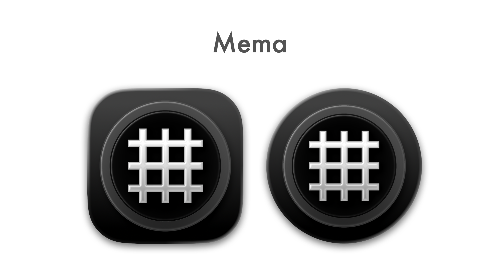
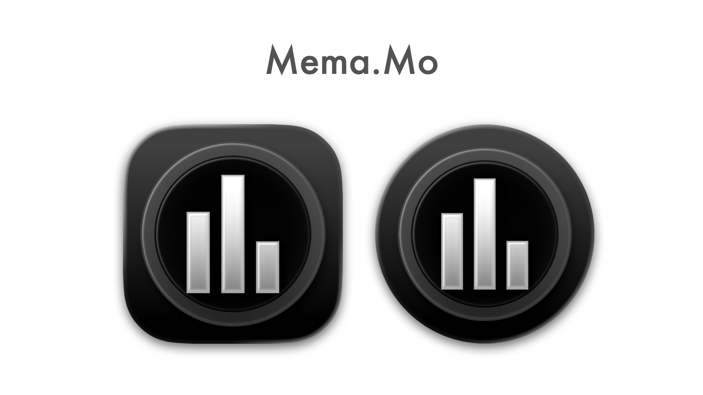
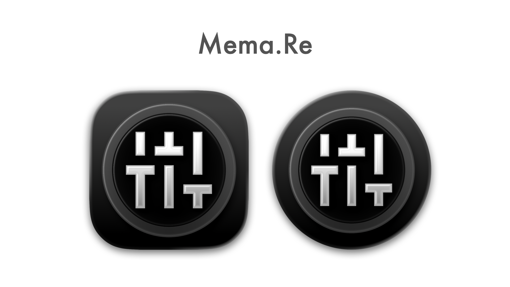
Full code documentation available at
See LATEST RELEASE for available binary packages or join iOS TestFlight Betas:
| Mema.Mo Testflight | Mema.Re Testflight |
|---|---|
| Appveyor CI build status | Mema | Mema.Mo | Mema.Re |
|---|---|---|---|
| macOS Xcode | |||
| Windows Visual Studio | |||
| Linux makefile |
Mema (MenubarMatrix) is a project initially created to try out JUCE C++ framework capabilities for creation of a macOS menubar tool, that provides audio matrix routing functionality - e.g. to route BlackHole 16ch virtual device to system output to enable flexible application and OS audio output routing to connected audio devices.
The tool has since evolved to full IO metering, IO mute and crosspoint enabled/gain processing. The UI per default can be opened from the macOS menubar or Windows notifcation area and can be toggled to open as a standalone permanent OS window. The appearance can be customized (coloring, dark/light mode) and the audio UI device configuration can be configured to match the usecases needs. On top of that, dedicated performance metering is visible on the UI - regaring audio processing load as well as regarding network traffic load for data transmission to connected metering and control clients.
Optionally the loading of an audio processing plug-in is supported to process the incoming audio before or after ('Post' UI toggle) it is fed into the routing matrix. Platform dependant, the usual VST, VST3, AU, LADSPA, LV2 plug-in formats are supported and their respective editor user interfaces can be used as a separate window. A usecase for this is an n-input to m-output upmix plug-in that, in combination with e.g. BlackHole, can serve to process stereo macOS system audio output to a 7.1.4 speaker system.
It is accompanied by a separate tool Mema.Mo (MenubarMatrixMonitor) to monitor the audio IO as levelmeters via network. It connects to Mema through a TCP connection and supports discovering the available instances through a multicast service announcement done by Mema. This supports different monitoring visualizations
Also part of the project is another tool Mema.Re (MenubarMatrixRemote) to remote control the input, output and crosspoint parameters of Mema instances and connects through the same TCP server as Mema.Mo. It supports two different control approaches
The sourcecode and prebuilt binaries are made publicly available to enable interested users to experiment, extend and create own adaptations.
Use what is provided here at your own risk!
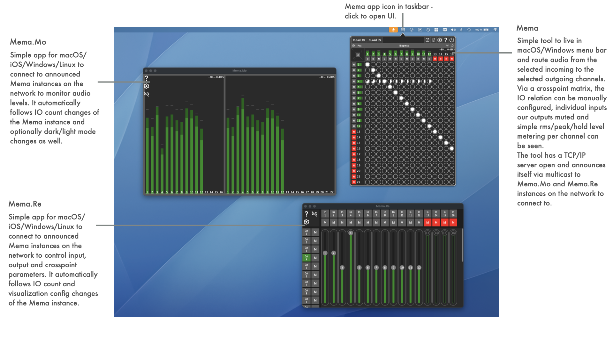
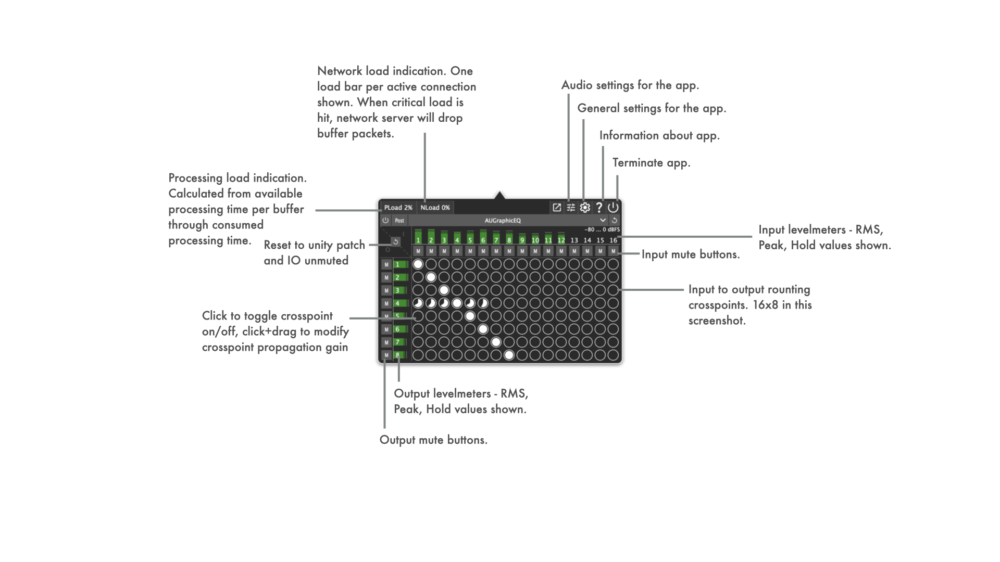
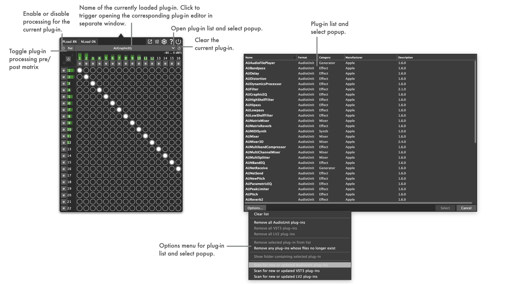
The **Post toggle** in the plug-in section of the Mema UI controls where in the signal chain the loaded plug-in is inserted.
Pre-matrix — Post toggle OFF | Post-matrix — Post toggle ON |
|---|---|
|
flowchart TD
A([Audio In])
B[Input Mutes]
C[Input Metering]
D[/PLUGIN/]
E[Crosspoint Matrix]
F[Output Mutes]
G[Output Metering]
H([Audio Out])
A --> B --> C --> D --> E --> F --> G --> H
|
flowchart TD
A([Audio In])
B[Input Mutes]
C[Input Metering]
E[Crosspoint Matrix]
D[/PLUGIN/]
F[Output Mutes]
G[Output Metering]
H([Audio Out])
A --> B --> C --> E --> D --> F --> G --> H
|
| The plug-in processes the raw (muted) input signal after input metering has captured the unprocessed levels. Its output feeds directly into the routing matrix, so all crosspoint gains and routes apply to the plug-in's output. Required channel count: number of active input channels. | The plug-in receives the fully routed and mixed signal after the crosspoint matrix. Output mutes and output metering are applied to the plug-in's output. Required channel count: number of active output channels. |
A typical use-case for Pre is per-input processing (e.g. noise gate, EQ) before routing. A typical use-case for Post is bus processing or upmixing (e.g. stereo → immersive) after routing.
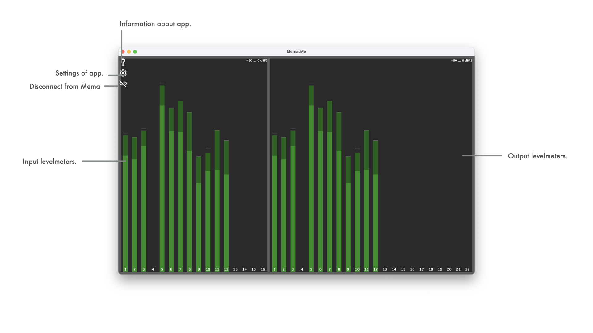
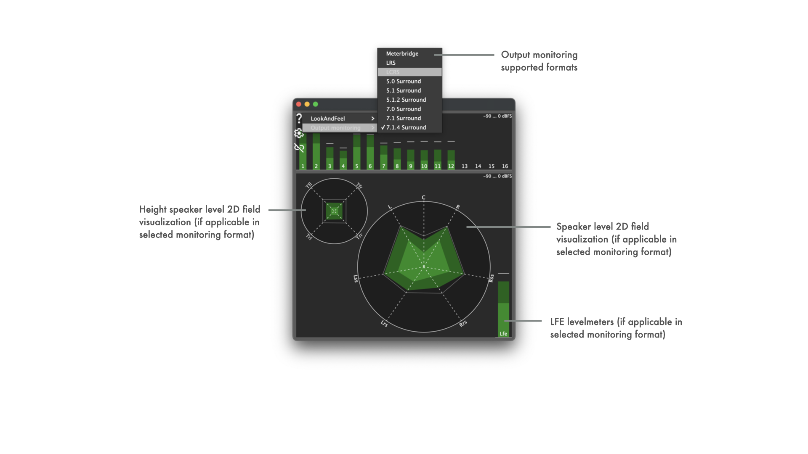
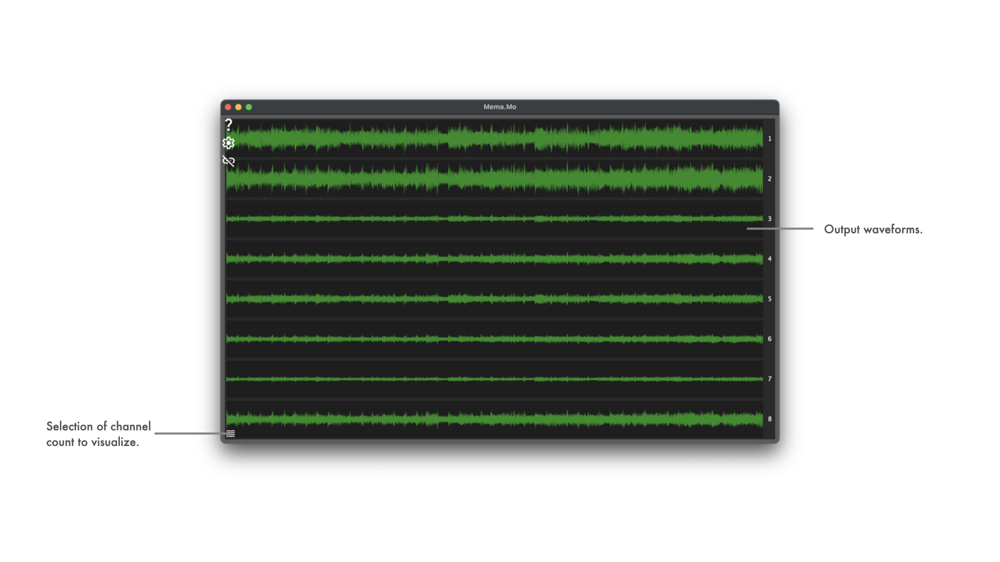
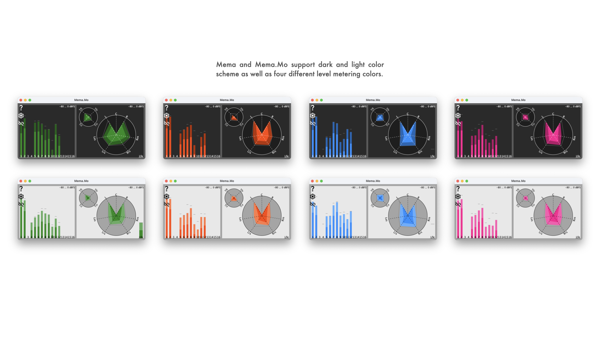
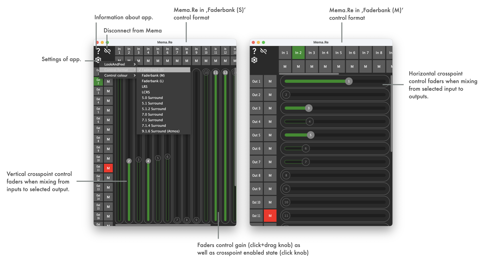
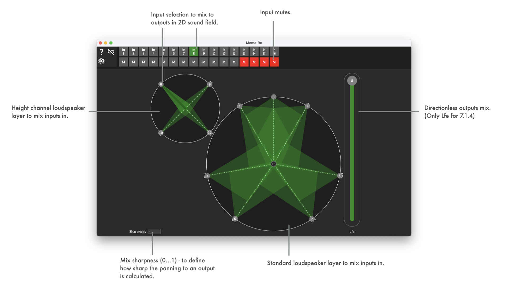
ADM-OSC external control is affecting the 2D soundfield panning function in Mema.Re.
Currently only the cartesian coordinate control parameters are supported for panning control.
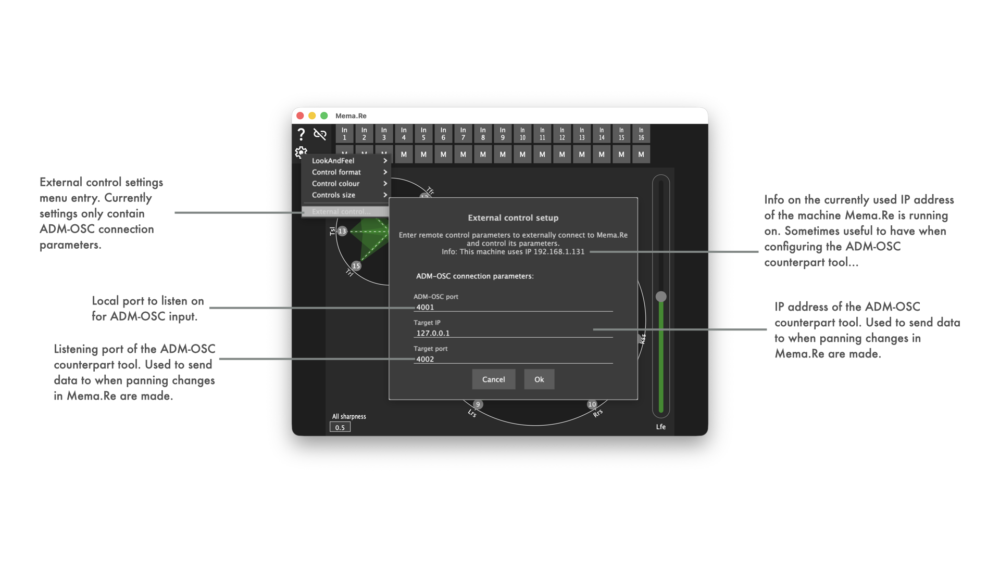
| Supported ADM-OSC parameter | address | type | range | Info |
|---|---|---|---|---|
| x coordinate | /adm/obj/n/x | f | -1.0f ... 1.0f | Horizontal panning position. |
| y coordinate | /adm/obj/n/y | f | -1.0f ... 1.0f | Vertical panning position. |
| z coordinate | /adm/obj/n/z | f | -1.0f ... 1.0f | Panning layer definition. Relevant for panning formats with a height layer, e.g. 5.1.2, 7.1.4, 9.1.6. Values above 0.5 are associated with height elevated outputs, values below with regular positioned outputs. |
| xy coordinate | /adm/obj/n/xy | f f | -1.0f ... 1.0f | Combined horizontal and vertical panning position. |
| xyz coordinate | /adm/obj/n/xyz | f f f | -1.0f ... 1.0f | Combined horizontal and vertical panning position and height layer association. |
| width | /adm/obj/n/w | f | 0.0f ... 1.0f | Associated with panning sharpness value. |
| mute | /adm/obj/n/mute | i | 0 ... 1 | Input mute. |
All three applications (Mema, Mema.Mo, Mema.Re) share a common set of command-line parameters. Parameters are passed directly when launching the executable from a terminal or as part of a launch script.
| Parameter | Applies to | Description |
|---|---|---|
--headless | Mema only | Launches Mema without a graphical user interface. Activates an interactive, numbered CLI menu for full configuration of input/output mutes, crosspoint matrix gains, audio device setup, and config file load/save. On Windows, a console window is attached (or created) automatically. |
--noupdates | Mema, Mema.Mo, Mema.Re | Disables the automatic online update check performed by JUCEAppBasics::WebUpdateDetector at startup. Useful in network-restricted environments, automated deployments, or kiosk setups where outbound HTTP requests to GitHub should be avoided. |
--noconfigui | Mema.Mo, Mema.Re | Hides the three configuration buttons (About, Settings, Disconnect) in the upper-left corner of the UI. Intended for kiosk or embedded deployments where the user should not be able to change settings or disconnect from the Mema server. |
When Mema is started with --headless a fully interactive, numbered menu is printed to the terminal. No graphical window is opened. On Windows, Mema attaches to the parent console automatically (or opens a new one if launched outside a terminal).
The menu is organised as a tree of numbered sub-menus. At every level, pressing b returns to the previous menu and q quits the application.
The main menu shows a live status summary next to each item (e.g. number of muted channels, current device name and sample rate) so the current state is always visible without entering a sub-menu.
Examples
Mema and Mema.Mo are based on JUCE C++ framework, which is a submodule of this repository.
JUCE's Projucer tool can either be used from a local installation or from within the submodule (submodules/JUCE/extras/Projucer).
Mema Projucer project file can be found in repository root directory.
In macOS buildscripts, shellscripts for automated building of the app, dmg and notarization are kept. These require a properly prepared machine to run on (signing certificates, provisioning profiles, notarization cretentials).
In Windows buildscripts, bash scripts for automated building of the app and installer (Innosetup based) are kept. These require a properly prepared machine to run on (innosetup installation).
In Linux buildscripts, shell scripts for automated building of the app are kept. These are aimed at building on Debian/Ubuntu/RaspberryPiOS and TRY to collect the required dev packages via apt packetmanager automatically.
Mema.Mo Projucer project file can be found in /MemaMo subdirectory .
In macOS buildscripts, shellscripts for automated building of the app, dmg and notarization are kept. These require a properly prepared machine to run on (signing certificates, provisioning profiles, notarization cretentials).
In iOS buildscripts, shellscripts for automated building of the app and updloading to the appstore are kept. These require a properly prepared machine to run on (appstore cretentials).
In Windows buildscripts, bash scripts for automated building of the app and installer (Innosetup based) are kept. These require a properly prepared machine to run on (innosetup installation).
In Linux buildscripts, shell scripts for automated building of the app are kept. These are aimed at building on Debian/Ubuntu/RaspberryPiOS and TRY to collect the required dev packages via apt packetmanager automatically.
Mema.Re Projucer project file can be found in /MemaRe subdirectory .
In macOS buildscripts, shellscripts for automated building of the app, dmg and notarization are kept. These require a properly prepared machine to run on (signing certificates, provisioning profiles, notarization cretentials).
In iOS buildscripts, shellscripts for automated building of the app and updloading to the appstore are kept. These require a properly prepared machine to run on (appstore cretentials).
In Windows buildscripts, bash scripts for automated building of the app and installer (Innosetup based) are kept. These require a properly prepared machine to run on (innosetup installation).
In Linux buildscripts, shell scripts for automated building of the app are kept. These are aimed at building on Debian/Ubuntu/RaspberryPiOS and TRY to collect the required dev packages via apt packetmanager automatically.
The build scripts build_MemaMo_RaspberryPIOS.sh/build_MemaRe_RaspberryPIOS.sh in Resources/Deployment/Linux can be used on a vanilla installation of RaspberryPi OS to build the tool.
On RaspberriPi 3B it is required to run the build without graphical interface, to avoid the build failing due to going out of memory (e.g. sudo raspi-config -> System Options -> Boot -> Console Autologin).
The build result can be run in kind of a kiosk configuration by changing the system to not start the desktop session when running Xserver, but instead run Mema.Mo/Mema.Re directly in the X session. To do this, edit or create .xsession in user home and simply add a line
Then configure the system to auto login to x session (e.g. sudo raspi-config -> System Options -> Boot -> Desktop Autologin).
___This does only work when using X server as graphics backend. Using Wayland requires differing approaches.___
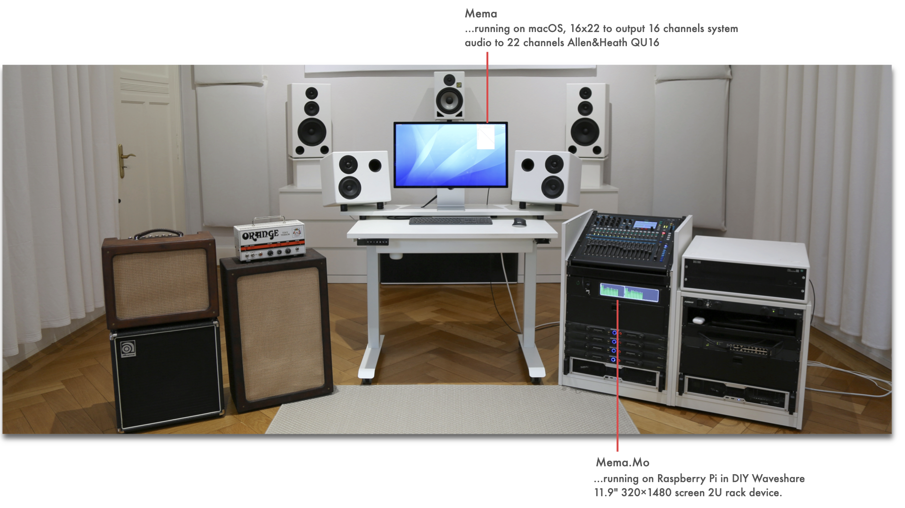
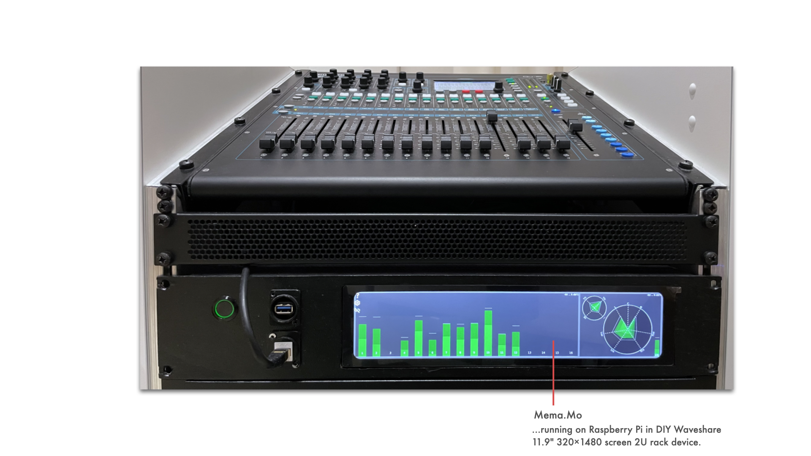
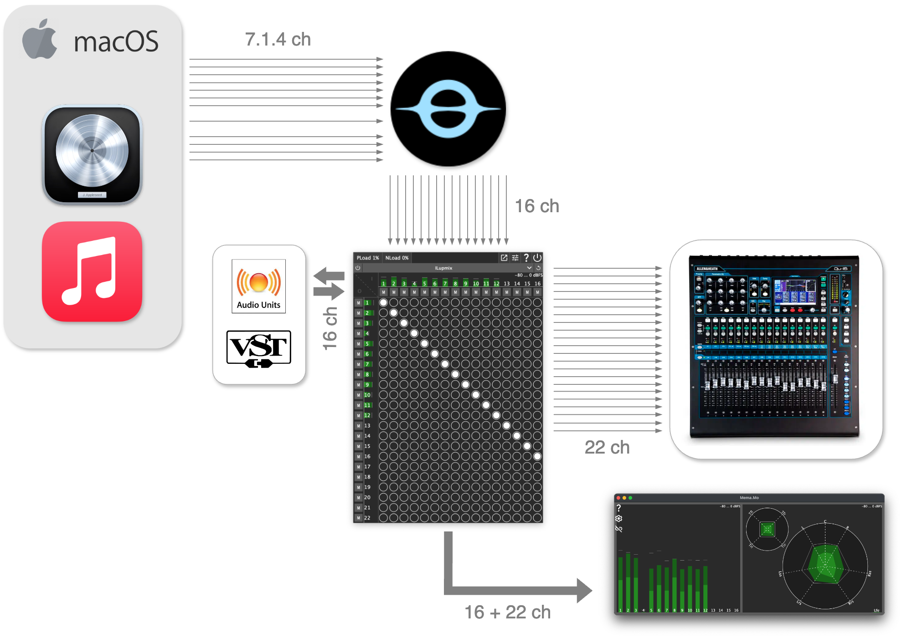
Mema.Mo on DIY 19" rack display, based on RaspberryPi (32bit RaspberryPiOS, Bullseye)
* 16 audio input channel metering visible
* 22 audio output channel metering visible
@anchor mobilerecordingusecase
@subsection autotoc_md32 Usecase: Mobile recording monitoring
<img src="Resources/Documentation/Showreel/Showreel.016.png" alt="Showreel.016.png" title="Mobile rig"/>
* Mema on macOS
* BlackHole 16ch used to route signal from LogicPro, Apple Music, etc. to Mema
* Output to stereo audio driver interface
* Mema.Mo on iPadOS in Stagemanager mode
* 16 audio input channel metering visible
* 2 audio output channel metering visible
@anchor admoscusecase
@subsection autotoc_md33 Usecase: ADM-OSC driven external panning control
<a href="https://youtu.be/5jSxzoz1hE0" ><img src="https://img.youtube.com/vi/5jSxzoz1hE0/0.jpg" alt="Example SW setup with Grapes drving Mema.Re driving Mema"/></a>
* Mema on macOS
* BlackHole 16ch used to route signal from macOS to Mema
* Output to multichannel interface, driving a 9.1.6 ATMOS immersive speaker setup
* Mema.Mo on macOS
* Meterbridge mode
* 16 audio input channel metering visible
* 16 audio output channel metering visible
* Mema.Re on macOS
* 9.1.6 panning layout active
* 16 input panning positions visible, 1-4 active in regular panning layer, 5-6 active in height panning layer
* Grapes on macOS
* Set up to control panning positions in Mema.Re via ADM-OSC
* Clips 1-4 configured to control ADM-OSC objects 1-4 with Z=0 -> Mema.Re regular panning layer
* Clips 5-6 configured to control ADM-OSC objects 5-6 with Z=1 -> Mema.Re height panning layer
@anchor architecture
@subsection autotoc_md34 Architecture
@anchor architectureoverview
@subsubsection autotoc_md35 Architecture overview - Mema, Mema.Mo, Mema.Re interaction/interconnection
@icode{mermaid}
flowchart LR
subgraph mema["Mema — Audio Matrix Server"]
subgraph mema_audio["Audio Engine"]
audio_dev["Audio Device I/O"]
matrix["Routing Matrix & Mutes"]
pluginhost["Plugin Host\nVST / AU / LV2"]
analyzers["Input & Output Analyzers"]
end
subgraph mema_net["Network"]
tcp_srv["TCP Server :55668"]
svc_srv["Multicast Discovery"]
end
end
subgraph memo["Mema.Mo — Monitor"]
subgraph memo_net["Connection"]
mo_disc["Multicast Discovery"]
mo_sock["TCP Client"]
end
subgraph memo_viz["Visualization"]
mo_anlz["Local Analyzer"]
mo_meter["Meterbridge"]
mo_2d["2D Field Output"]
mo_wave["Waveform"]
mo_spect["Spectrum"]
end
end
subgraph mere["Mema.Re — Remote Control"]
subgraph mere_net["Connection"]
re_disc["Multicast Discovery"]
re_sock["TCP Client"]
end
subgraph mere_ctrl["Controls"]
re_fader["Faderbank Control"]
re_pan["2D Panning Control"]
re_plugin["Plugin Parameter Control"]
re_osc["ADM-OSC Receiver"]
end
end
audio_dev --> matrix
matrix --> pluginhost
matrix --> analyzers
analyzers --> tcp_srv
tcp_srv --> svc_srv
mo_disc --> mo_sock
mo_sock --> mo_anlz
mo_anlz --> mo_meter
mo_anlz --> mo_2d
mo_anlz --> mo_wave
mo_anlz --> mo_spect
re_disc --> re_sock
re_sock --> re_fader
re_sock --> re_pan
re_sock --> re_plugin
re_osc --> re_pan
mo_sock -- TCP --> tcp_srv
re_sock -- TCP --> tcp_srv
@endicode
<strong>Mema</strong> is the core tool, providing matrix processing, a popup-style UI and tcp server for clients to connect and monitor/control data:
- <tt>MemaProcessor</tt> drives audio I/O via JUCE <tt>AudioDeviceManager</tt>; the per-block signal chain is: <strong>Input Mutes → Input Metering → [Plugin, pre-matrix] → Crosspoint Matrix → [Plugin, post-matrix] → Output Mutes → Output Metering</strong> — only one plugin position is active at a time, selected by the <tt>Post</tt> toggle
- An optional plugin (VST/VST3/AU/LADSPA/LV2) can be inserted pre- or post-matrix; each plugin parameter can be individually marked as remotely controllable with a configurable control type (<tt>Continuous</tt>, <tt>Discrete</tt>, <tt>Toggle</tt>)
- <tt>ProcessorDataAnalyzer</tt> (one per direction) performs peak/RMS/hold metering and FFT spectrum analysis at ~10 ms intervals
- <tt>InterprocessConnectionServerImpl</tt> serves multiple simultaneous TCP clients on port 55668; <tt>ServiceTopologyManager</tt> announces the server via multicast
- Network protocol messages include: <tt>ControlParametersMessage</tt>, <tt>AudioInputBufferMessage</tt>/<tt>AudioOutputBufferMessage</tt>, <tt>PluginParameterInfosMessage</tt>, <tt>PluginParameterValueMessage</tt>
<strong>Mema.Mo</strong> is the monitoring client:
- Discovers Mema via multicast and opens a persistent TCP socket to receive streaming audio output buffers
- Received buffers are fed into a local <tt>ProcessorDataAnalyzer</tt> replica for level and spectrum computation
- Four pluggable visualization components subscribe to the analyzer: <tt>MeterbridgeComponent</tt>, <tt>TwoDFieldOutputComponent</tt> (LRS up to 9.1.6 ATMOS layouts), <tt>WaveformAudioComponent</tt>, and <tt>SpectrumAudioComponent</tt>
<strong>Mema.Re</strong> is the remote control client:
- Discovers Mema via multicast and opens a persistent TCP socket
- Receives a full <tt>ControlParametersMessage</tt> state snapshot on connect, then sends updated snapshots on user interaction
- Three control modes: <tt>FaderbankControlComponent</tt> (input×output crosspoint sliders/mutes), <tt>PanningControlComponent</tt> (interactive 2D spatial field backed by <tt>TwoDFieldMultisliderComponent</tt>), and <tt>PluginControlComponent</tt> (per-parameter controls rendered dynamically as slider, combo box, or toggle button based on <tt>ParameterControlType</tt>)
- <tt>ADMOSController</tt> listens for ADM-OSC UDP packets (x/y/z/width/mute per object) and feeds them directly into the panning control
@anchor memaarchitecture
@subsubsection autotoc_md36 Mema — Internal Architecture
@icode{mermaid}
flowchart LR
adm_in["AudioDeviceManager
(JUCE) — input"]
adm_out["AudioDeviceManager
(JUCE) — output"]
cfg["MemaAppConfiguration
(XML)"]
subgraph proc["MemaProcessor — Signal Chain (left to right)"]
in_mutes["Input Mutes"]
in_anlz["Input Analyzer\npeak · RMS · hold · FFT"]
plugin_pre["Plugin Host\nVST / AU / LV2\nPre-matrix
(Post toggle OFF)"]
xp["Crosspoint Matrix\ngains & enables"]
plugin_post["Plugin Host\nVST / AU / LV2\nPost-matrix
(Post toggle ON)"]
out_mutes["Output Mutes"]
out_anlz["Output Analyzer\npeak · RMS · hold · FFT"]
end
subgraph ui["MemaProcessorEditor"]
in_ctrl["InputControlComponent"]
xp_ctrl["CrosspointsControlComponent"]
out_ctrl["OutputControlComponent"]
plug_ctrl["PluginControlComponent
(load · pre/post · param types)"]
meter["MeterbridgeComponent"]
end
subgraph net["Network"]
tcp["InterprocessConnectionServerImpl
:55668"]
disc["ServiceTopologyManager
(multicast)"]
end
adm_in -->|audio in| in_mutes
in_mutes --> in_anlz
in_anlz -->|Post OFF| plugin_pre --> xp
in_anlz -->|Post ON| xp
xp -->|Post ON| plugin_post --> out_mutes
xp -->|Post OFF| out_mutes
out_mutes --> out_anlz
out_anlz -->|audio out| adm_out
in_anlz --> in_ctrl
in_anlz --> meter
out_anlz --> out_ctrl
out_anlz --> meter
xp --> xp_ctrl
plug_ctrl --> plugin_pre
plug_ctrl --> plugin_post
xp -->|state & audio buffers| tcp
tcp --> disc
cfg -.- proc
@endicode
@anchor memamoarchitecture
@subsubsection autotoc_md37 Mema.Mo — Internal Architecture
@icode{mermaid}
flowchart TD
multicast[/"Mema Multicast Announcement"/]
mema_srv[/"Mema TCP Server :55668"/]
subgraph app["Mema.Mo Application"]
cfg["MemaMoAppConfiguration
(XML)"]
main["MainComponent
(state machine:\nDiscovering → Connecting → Monitoring)"]
subgraph connection["Discovery & Connection"]
disc_comp["MemaClientDiscoverComponent"]
conn_comp["MemaClientConnectingComponent"]
sock["InterprocessConnectionImpl
(TCP client)"]
end
subgraph monitor["MemaMoComponent"]
anlz["ProcessorDataAnalyzer
(local replica)\npeak · RMS · hold · FFT"]
subgraph viz["Visualization (switchable)"]
meter2["MeterbridgeComponent
(level meters)"]
field["TwoDFieldOutputComponent
(2D spatial: LRS to 9.1.6 ATMOS)"]
wave["WaveformAudioComponent"]
spect["SpectrumAudioComponent"]
end
end
end
multicast -->|discovery| disc_comp
disc_comp -->|selected service| conn_comp
conn_comp --> sock
sock <-->|TCP| mema_srv
sock -->|AudioOutputBufferMessage\nAnalyzerParametersMessage\nEnvironmentParametersMessage| anlz
anlz --> meter2
anlz --> field
anlz --> wave
anlz --> spect
cfg -.- main
main --> disc_comp
@endicode
@anchor memarearchitecture
@subsubsection autotoc_md38 Mema.Re — Internal Architecture
@icode{mermaid}
flowchart TD
multicast[/"Mema Multicast Announcement"/]
mema_srv[/"Mema TCP Server :55668"/]
ext_ctrl[/"External Controller
(e.g. Grapes)\nADM-OSC UDP"/]
subgraph app["Mema.Re Application"]
cfg["MemaReAppConfiguration
(XML)"]
main["MainComponent
(state machine:\nDiscovering → Connecting → Controlling)"]
subgraph connection["Discovery & Connection"]
disc_comp["MemaClientDiscoverComponent"]
conn_comp["MemaClientConnectingComponent"]
sock["InterprocessConnectionImpl
(TCP client)"]
end
subgraph remote["MemaReComponent"]
subgraph modes["Control Modes (switchable)"]
fader["FaderbankControlComponent\ninput x output crosspoint sliders & mutes"]
pan["PanningControlComponent
+ TwoDFieldMultisliderComponent
(LRS to 9.1.6 ATMOS)"]
plug["PluginControlComponent\nslider / combobox / toggle\nper ParameterControlType"]
end
admosc["ADMOSController
(ADM-OSC UDP)\nx · y · z · width · mute per object"] end end
multicast -->|discovery| disc_comp disc_comp -->|selected service| conn_comp conn_comp --> sock sock <-->|TCP| mema_srv sock -->|ControlParametersMessage\nPluginParameterInfosMessage| fader sock -->|ControlParametersMessage\nPluginParameterInfosMessage| pan sock -->|PluginParameterInfosMessage| plug fader -->|ControlParametersMessage| sock pan -->|ControlParametersMessage| sock plug -->|PluginParameterValueMessage| sock ext_ctrl -->|OSC UDP| admosc admosc -->|position & mute updates| pan cfg -.- main main --> disc_comp
{kind=link}